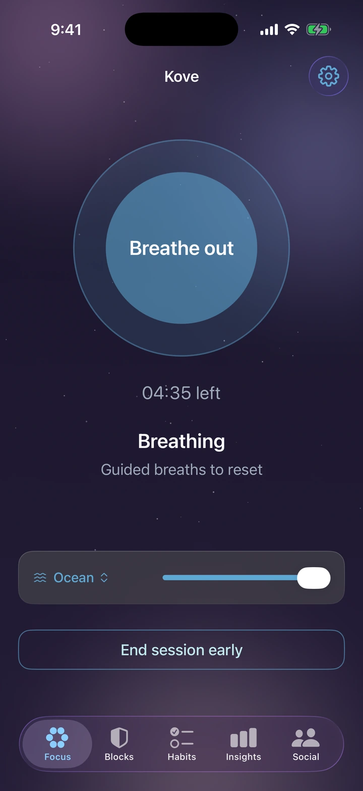
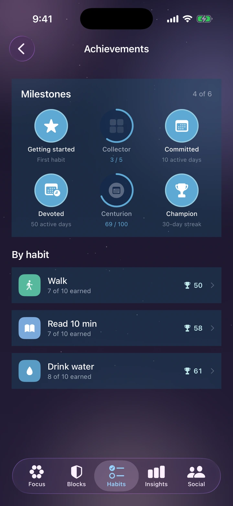
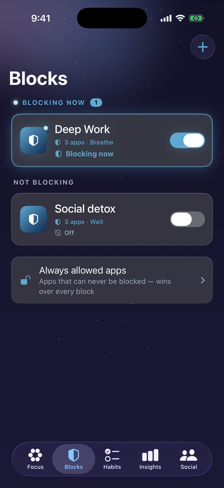

Kove
In development iPhoneA focus and app-blocking app. Set your own limits, shield the apps that pull you away, and let a quiet streak build behind you — with your screen-time data staying on your device.
- Focus sessions
- App blocking
- Habits
- On-device data


